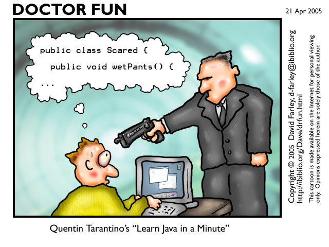
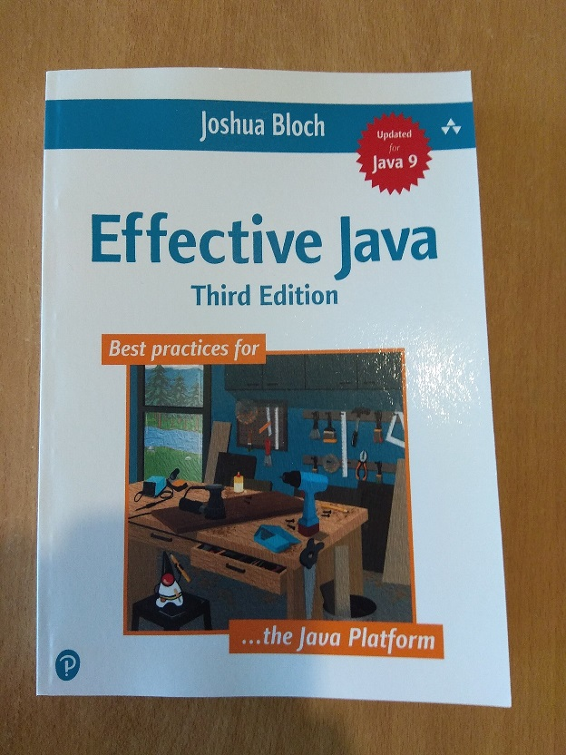

Ultra(re)learning Java - My takeaways
Published at 2022-12-24T23:18:40+02:00

As a regular participant in the annual Pet Project competition at work, I always try to find a project where I can learn something new. In this post, I would like to share my takeaways after revisiting Java. You can read about my motivations in my "Creative universe" post:
Creative universe
I have been programming in Java back in the days as a university student, and even my Diploma Thesis I implemented in Java (it would require some overhaul so that it is fully compatible with a recent version of Java, though - It still compiles and runs, but with a lot of warnings, though!):
VS-Sim: Distributed systems simulator
However, after that, I became a Linux Sysadmin and mainly continued programming in Perl, Puppet, bash, and a little Python. For personal use, I also programmed a bit in Haskell and C. After my Sysadmin role, I moved to London and became a Site Reliability Engineer (SRE), where I mainly programmed in Ruby, bash, Puppet and Golang and a little bit of C.
At my workplace, as an SRE, I don't do Java a lot. I have been reading Java code to understand the software better so I can apply and suggest workarounds or fixes to existing issues and bugs. However, most of our stack is in Java, and our Software Engineers use Java as their primary programming language.
Stuck at Java 1.4
Over time, I had been missing out on many new features that were added to the language since Java 1.4, so I decided to implement my next Pet Project in Java and learn every further aspect of the language as my main goal. Of course, I still liked the idea of winning a Pet Project Prize, but my main objective was to level up my Java skills.
Ultra(re)lerning & upskilling to Java 18
Effective Java
This book was recommended by my brother and also by at least another colleague at work to be one of the best, if not the best, book about Java programming. I read the whole book from the beginning to the end and immersed myself in it. I fully agree; this is a great book. Every Java developer or Java software engineer should read it!

I recommend reading the 90-part effective Java Series on dev.to. It's a perfect companion to the book as it explains all the chapters again but from a slightly different perspective and helps you to really understand the content.
Kyle Carter's 90-part Effective Java Series
Java Pub House
During my lunch breaks, I usually have a walk around the block or in a nearby park. I used that time to listen to the Java Pub House podcast. I listened to *every* episode and learned tons of new stuff. I can highly recommend this podcast. Especially GraalVM, a high-performance JDK distribution written for Java and other JVM languages, captured my attention. GraalVM can compile Java code into native binaries, improving performance and easing the distribution of Java programs. Because of the latter, I should release a VS-Sim GraalVM edition one day through a Linux AppImage ;-).
https://www.javapubhouse.com
https://www.graalvm.org
Java Concurrency course
I also watched a course on O'Reilly Safari Books online about Java Concurrency. That gave an excellent refresher on how the Java thread pools work and what were the concurrency primitives available in the standard library.
Read a lot of Java code
First, the source code is often the best documentation (if programmed nicely), and second, it helps to get the hang of the language and standard practices. I started to read more and more Java code at work. I did that whenever I had to understand how something, in particular, worked (e.g. while troubleshooting and debugging an issue).
Observed Java code reviews
Another great way to get the hang of Java again was to sneak into the code reviews of the Software Engineer colleagues. They are the expert on the matter and are a great source to copy knowledge. It's OK to stay passive and only follow the reviews. Sometimes, it's OK to step up and take ownership of the review. The developers will also always be happy to answer any naive questions which come up.
Took ownership of a roadmap-Java project
Besides my Pet Project, I also took ownership of a regular roadmap Java project at work, making an internal Java service capable of running in Kubernetes. This was a bunch of minor changes and adding a bunch of classes and unit tests dealing with the statelessness and a persistent job queue in Redis. The job also involved reading and understanding a lot of already existing Java code. It wasn't part of my job description, but it was fun, and I learned a lot. The service runs smoothly in production now. Of course, all of my code got reviewed by my Software Engineering colleagues.
The good
From the new language features and syntaxes, there are many personal takeaways, and I can't possibly list them all, but here are some of my personal highlights:
- Static factory methods and public constructors both have their uses, and it pays to understand their relative merits. Often static factories are preferable (cleaner and easier to read), so avoid the reflex to provide public constructors without first considering static factories.
- Java streams were utterly new to me. I love how they can help to produce more compact code. But it's challenging to set the line of when enough is enough. Overusing streams can have the opposite effect: Code becomes more complex and challenging to understand. And it is so easy to parallelize the computation of streams by "just" marking the stream as .parallel() (more on that later in this post).
- Overall, object-oriented languages tend to include more and more functional paradigms. The functional interfaces, which Java provides now, are fantastic. Their full powers shine in combination with the use of streams. An entire book can be written about Java functional interfaces, so I leave it to you to do any further digging.
- Local type inference help to reduce even more boilerplate code. E.g. instead of Hash<String,Hash<String,String>> foo = new Hash<String,Hash<String,String>>(); it's possible to just write var foo = new Hash<String,Hash<String,String>>();
- Class inheritance isn't the preferred way anymore to structure reusable code. Now, it's composition over inheritance. E.g. use dependency injection (inject one object to another object through its constructor) or prefer interfaces (which now also support default implementations of methods) over class inheritance. This makes sense to me as I do that already when I program in Ruby.
- I learned the try-with-resources pattern. Very useful in ensuring closing resources again correctly. No need anymore for complicated and nested finally-blocks, which used to be almost impossible to get right previously in case of an error condition (e.g. I/O error somewhere deeply nested in an input or output stream).
- Optimize only when required. It's considered to be cleaner to prefer immutable variables (declaring them as final). I knew that already, but for Java, it always seemed to be a waste of resources (creating entirely new objects whenever states change), but apparently, it's okay. Java also does many internal tricks for performance optimization here, e.g. interning strings.
- I learned about the concept of static member classes and the difference between non-static member classes (also sometimes known as inner classes). Non-static member classes have full access to all members of their outer class (think of closure). In contrast, static member classes act like completely separate classes without such access but provide the benefit of a nested name that can help group functionality in the code.
- I learned about the existence of thread-local variables. These are only available to the current thread and aren't shared with other threads.
- I learned about the concept of Java modules, which help to structure larger code bases better. The traditional Java packages are different.
- I learned to love the new Optional type. I already knew the concept from Haskell, where Maybe would be the corresponding type. Optional helps to avoid null-pointers but comes with some (minimal) performance penalty. So, in the end, you end up with both Optional types and null-pointers in your code (depending on the requirements). But I like to prefer Optional over null-pointer when "no result" is a valid return value from a method.
- The enum type is way more powerful than I thought. Initially, I felt an enum could only be used to define a list of constants and then to compare an instance to another instance of the same. An enum is still there to define a list of constants, but it's also almost like a class (you can implement constructors, and methods, inherit from other enums). There are quite a lot of possible use cases.
- A small but almost the most helpful thing I learned is always to use the @Override annotation when overriding a method from a parent class. If done, Java helps to detect any typos or type errors when overriding methods. That's useful and spares a lot of time debugging where a method was mistakenly overloaded but not overridden.
- Lambdas are much cleaner, shorter and easier to read than anonymous classes. Many Java libraries require passing instances of (anonymous) classes (e.g. in Swing) to other objects. Lambdas are so lovely because they are primarily compatible with the passing of anonymous classes, so they are a 1:1 replacement in many instances. Lambdas also play very nicely together with the Java functional interfaces, as each Lambda got a type, and the type can be an already existing functional interface (or, if you got a particular case, you could define your custom functional interface for your own set of Lambdas, of course).
- I love the concept of Java records. You can think of a record as an immutable object holding some data (as members). They are ideal for pipe and stream processing. They are much easier to define (with much less boilerplate) and come with write protection out of the box.
The bad and the ugly
There are also many ugly corners in Java. Many are doomed to stay there forever due to historical decisions and ensuring backward compatibility with older versions of the Java language and the Java standard library.
- Finalizers and cleaners seem obsolete, fragile and still, you can use them.
- In many cases, extreme caution needs to be taken to minimize the accessibility of class members. You might think that Java provides the best "out-of-the-box" solution for proper encapsulation, but the language has many loopholes.
- In the early days, Java didn't support generics yet. So what you would use is to cast everything to Object. Java now fully supports generics (for a while already), but you can still cast everything to Object and back to whatever type you want. That can lead to nasty runtime errors. Also, there's a particular case to convert between an Array of Object to an Array of String or from an Array of String to a List of String. Java can't convert between these types automatically, and extreme caution needs to be taken when enforcing so (e.g. through explicit type casts). In many of these cases, Java would print out warnings that need to be manually suppressed via annotations. Programming that way, converting data between old and new best practices, is clunky.
- If you don't know what you do, Java streams can be all wrong. Side effects in functions used in streams can be nasty to debug. Also, don't just blindly add a .parallel() to your stream. You need to understand what the stream does and how it exactly works; otherwise, parallelizing a stream can impact the performance drastically (in a negative way). There need to be language constructs preventing you from doing the wrong things. That's so much easier to do it right in a purely functional programming language like Haskell.
- Java is a pretty old language (already), so there are many obstacles to consider. There are too many exceptions and different outcomes of how Java code can behave. In most cases, when you write an API, every method you program needs to be documented so the user won't encounter any surprises using your code. Writing and reading a lot of documentation seems to be quite the overhead when the method name is already descriptive.
- Java serialization is broken. It works, and the language still supports it, but you better not use Java's native way of object serialization and deserialization. Unbelievable how much can get wrong here, especially regarding security (injecting arbitrary code).
- Being a bit spoiled by Golang's Goroutines, I was shocked about the limitations of the Java threads. They are resource hungry, and you can't just spin up millions of them as you would with Goroutines. I knew this limitation of threads already (as it's not a problem of the language but of how threads work in the OS), but still, I was pretty shocked when I got reminded of them again. Of course, there's a workaround: Use asynchronous sockets so that you don't waste a whole thread on a single I/O operation (in my case, waiting for a network response). Golang's runtime does that automatically for you: An OS thread will be re-used for other tasks until the network socket unblocks. Every modern programming language should support lightweight threads or Coroutines like Go's Goroutines.
Conclusion
While (re)learning Java, I felt like a student again and was quite enthusiastic about it initially. I invested around half a year, immersing myself intensively in Java (again). The last time I did that was many years ago as a university student. I even won a Silver Prize at work, implementing a project this year (2022 as of writing this). I feel confident now with understanding, debugging and patching Java code at work, which boosted my debugging and troubleshooting skills.
I don't hate Java, but I don't love programming in it, either. I will, I guess, always see Java as the necessary to get stuff done (reading code to understand how the service works, adding a tiny feature to make my life easier, adding a quick bug fix to overcome an obstacle...).
Although Java has significantly improved since 1.4, its code still tends to be more boilerplate. Not mainly because due to lines of code (Golang code tends to be quite repetitive, primarily when no generics are used), but due to the levels of abstractions it uses. Class hierarchies can be ten classes or deeper, and it is challenging to understand what the code is doing. Good test coverage and much documentation can mitigate the problem partially. Big enterprises use Java, and that also reflects to the language. There are too many libraries and too many abstractions that are bundled with too many legacy abstractions and interfaces and too many exceptions in the library APIs. There's even an external library named Lombok, which aims to reduce Java boilerplate code. Why is there a need for an external library? It should be all part of Java itself.
https://projectlombok.org/
Java needs a clean cut. The clean cut shall be incompatible with previous versions of Java and only promote modern best practices without all the legacy burden carried around. The same can be said for other languages, e.g. Perl, but in Perl, they already attack the problem with the use of flags which change the behaviour of the language to more modern standards. Or do it like Python, where they had a hard (incompatible) cut from version 2 to version 3. It will be painful, for sure. But that would be the only way I would enjoy using that language as one of my primary languages to code new stuff regularly. Currently, my Java will stay limited to very few projects and the more minor things already mentioned in this post.
Am I a Java expert now? No, by far not. But I am better now than before :-).
E-Mail your comments to hi@paul.cyou :-)
More entries